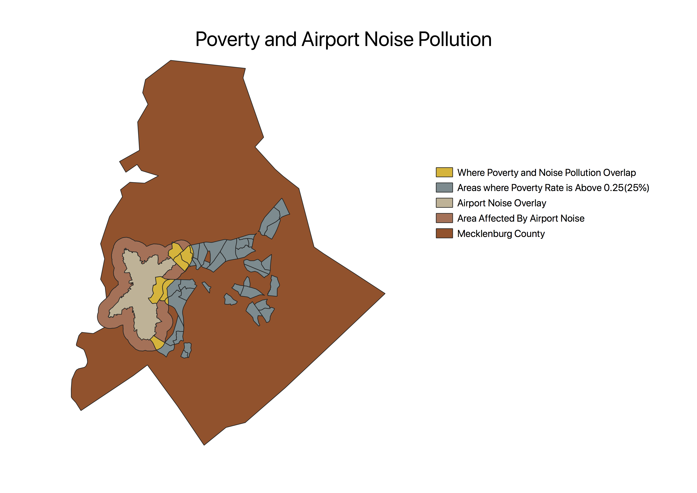

Homework 10: Geoprocessing Analysis
Alex Hubbs
How much of Charlotte's most impoverished areas are in range of Charlotte Douglas International Airport's noise pollution?
I chose to examine the relationship between where people under the poverty level are living and noise pollution caused by Charlotte's airport. I thought that the land surrounding the may have a cheaper value due to the constant noise caused by the hundreds of flights in and out of the airport daily. I used a data set that showed the airport's noise overlay and then added a buffer of one mile since this area would still experience major noise pollution. I then found a data set that showed poverty levels within different block groups and eliminated all of the block groups with poverty rates less that 25% in order to show the most impoverished areas of the city. I then did an intersection between the two layers to see how much of the noise polluted area was inhabited by an impoverished population. I found that while some of Charlotte's most impoverished regions are within the range of the airport noise, there is no clear correlation, so the answer to my question appears to be not that much.
My Map:

Sources:
Link to my cleaned CSV dataset
Link to source of my CSV
Link to my vector file